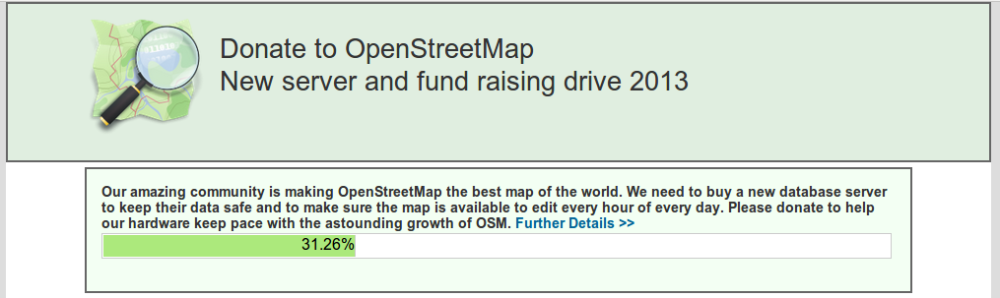
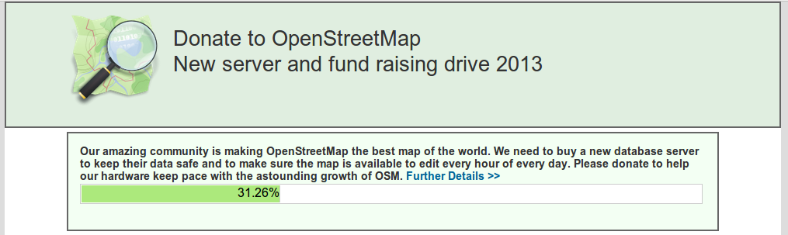
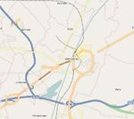
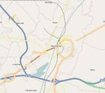
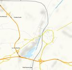
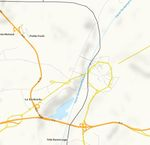
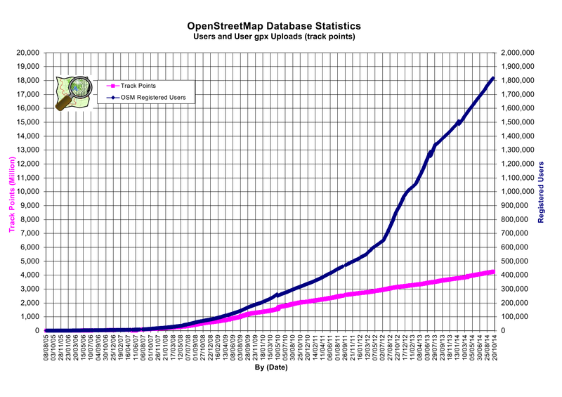
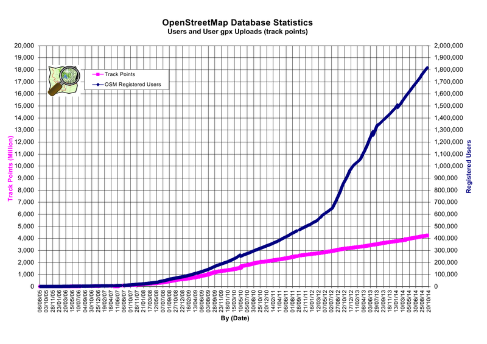
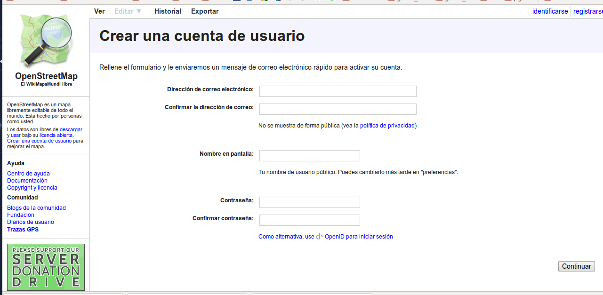

 

 


OpenStreetMap es un mapa callejero gratuito de todo el mundo, creado por una creciente comunidad de entusiastas de los mapas.
OpenStreetMap es una herramienta para crear y compartir información cartográfica. Cualquiera puede contribuir a OSM, y miles de personas se suman al proyecto cada día.
Lo más importante de los mapas de OpenStreetMap es que son totalmente libres y gratuitos.
A través del navegador web, en la dirección:
Los mapas están hechos de datos geolocalizados
Se pueden utilizar sofisticados equipos robotizados...
... o equipos sencillos manejados por personas inteligentes
Kara, Togo (África)
La ciudad prohibida de Pekín
La otra ciudad prohibida
Mi pueblo
OpenStreetMap está construido con las aportaciones de miles de voluntarios repartidos por todo el mundo.
1.800.000 usuarios registrados (650.000 más desde mayo 2013)
18.000.000.000 track points (6.000M más desde mayo 2013)
 

Los fondos necesarios para el mantenimiento de los servidores y redes de comunicación sale de donaciones voluntarias de particulares y empresas
Nominatim (del Latín, 'por nombre') es una herramienta para buscar datos de OSM por nombre y dirección y generar direcciones sintéticas (geocoding inverso)
El portal de nominatim:
http://nominatim.openstreetmap.org/


Para poder editar los mapas es necesario registrarse como usuario

La información de OSM está compuesta de elementos que, a su vez, pueden ser del tipo:
Cada elemento llevará asociada, además de las coordenadas y otros datos, información en forma de etiquetas, tags, Key-Value
<?xml version="1.0" encoding="UTF-8"?>
<osm version="0.6" generator="CGImap 0.0.2">
<bounds minlat="54.0889580" minlon="12.2487570"
maxlat="54.0913900" maxlon="12.2524800"/>
<node>...</node>
<way>...</way>
<relation>...</relation>
</osm>
Los elementos se describen mediante etiquetas, tags
Los tags son una pareja Key-Value.
Key y Value son cadenas de texto de formato libre
En la práctica hay convenciones acerca de qué etiquetas utilizar. Algunos ejemplos:
highway=residential
name=N-III
maxspeed=60
Las etiquetas más comunes se pueden consultar en:


Los Nodos se pueden utilizar para representar una característica espacial individual, por ejemplo una cabina de teléfono, o como componente de un elemento Way o Relation
<node id="25496583" lat="51.5173639" lon="-0.140043"
version="1" changeset="203496" user="80n" uid="1238"
visible="true" timestamp="2007-01-28T11:40:26Z">
<tag k="highway" v="traffic_signals"/>
</node>
Los elementos tipo Way son una colección ordenada de entre 2 y 2.000 nodos
Un elemento way tendrá al menos una etiqueta, tag o pertenecerá a una relación
Un elemento Way puede representar una polilínea abierta, una polilínea cerrada o un área
<way id="5090250" visible="true" timestamp="2009-01-19T19:07:25Z"
version="8" changeset="816806" user="Blumpsy" uid="64226">
<nd ref="822403"/>
<nd ref="21533912"/>
<nd ref="821601"/>
<nd ref="21533910"/>
<nd ref="135791608"/>
<nd ref="333725784"/>
<tag k="highway" v="residential"/>
<tag k="name" v="Clipstone Street"/>
<tag k="oneway" v="yes"/>
</way>
Es un elemento tipo way en el que los puntos inicial y final no coinciden
Se utilizan para representar features lineales como pueden ser las carreteras, los ríos, las vías de tren y otras
Una polilínea cerrada se representa mediante un elemento way en el que coinciden el nodo inicial y el final
Se pueden utilizar para representar edificios, glorietas y otros
Son elementos way en los que coinciden el punto inicial y final y que además tienen alguna etiqueta que lo define como un área o polígono
Se utilizan para representar áreas de terreno con una finalidad especial, como puede ser un parque, por ejemplo
Una etiqueta area=yes define una polilínea cerrada como area, pero también hay otras, por ejemplo leisure=park o amenity=school
Una Relation es un elemento complejo que consta de una serie de etiquetas y una colección ordenada de elementos Node o elementos Way, cada uno de los cuales puede tener asignado un Role
Se utilizan para describir Multi-polígonos o Rutas de transporte público, por ejemplo
Algunas de las relations aceptadas son: multipolygon, route y waterway
<relation id="1">
<tag k="type" v="multipolygon" />
<member type="way" id="1" role="outer" />
<member type="way" id="2" role="inner" />
<member type="way" id="3" role="inner" />
</relation>
El proceso de visualización de los datos de OpenStreetMap se puede abordar desde una perspectiva vectorial o desde una perspectiva raster
Los servidores de OpenStreetMap ofrecen los mapas renderizados a traves de Mapnik en formato de tiles raster según varios estilos de visualización: Mapnik, OpenCycleMap, OSM-WMS-Europe
Hay varios editores para elegir. Destacamos aquí:
Podemos seleccionar el editor en la pestaña de preferencias de usuario o bien con un parametro en la url al editar
http://www.openstreetmap.org/edit?editor=idEn el portal learnosm.org se pueden encontrar numerosas guías de aprendizaje, en varios idiomas, y que abarcan desde el aprendizaje de principiantes hasta los usos para expertos

JOSM es un editor extensible para OpenStreetMap, de código abierto, escrito en Java 7
El formato de OSM son ficheros xml con extensión .osm
Hay muchos complementos para JOSM. Se puede encontrar información de los mismos en:
https://josm.openstreetmap.de/wiki/Plugins

Hay varias maneras de convertir los datos de OpenStreetMap en tablas de Postgis:
En QGis los ficheros con extensión .osm se pueden añadir como capa vectorial, igual que añadimos un shapefile
Se nos generan varias capas: points, lines, multilistrings, multipolygons y otherrelations
Una vez en QGis podemos editar los datos y exportarlos a otros formatos GIS
Esta obra está bajo una Licencia Creative Commons Atribución-NoComercial-CompartirIgual 3.0 Unported.